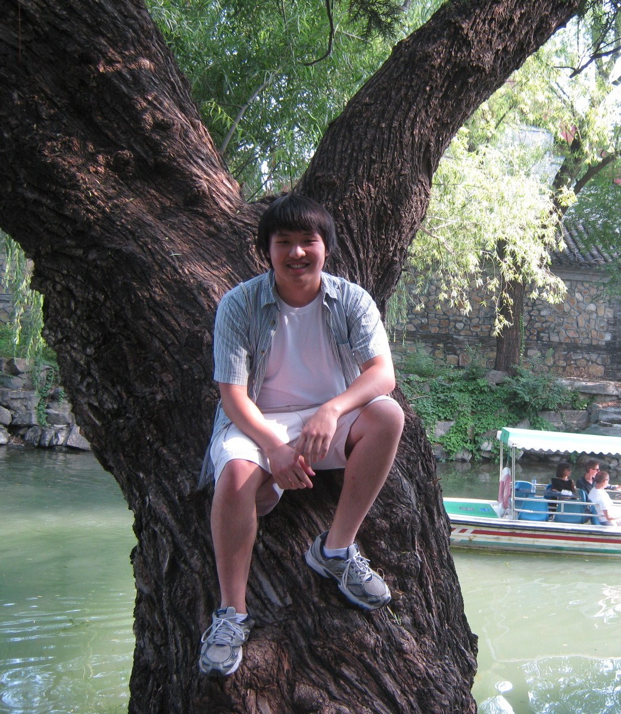

Class of 2008
Jun Huang
Jun's passion for the natural sciences began at a very young age and led him to join Science Olympiad in 7th grade. A member of four national-ranking teams, he led Solon Middle School to a 4th place overall finish in 2005 and won gold in bottle rockets. With his classman Matt Ferraro, Jun led Solon High School to a 2nd place finish at the nation's capitol in 2008. In his six years as a member of the Solon team, Jun built lasting friendships, learned the value of teamwork, and proudly saw to fruition all that personal creativity and hard work can achieve. Today he pursues a B.S. in Biomedical Engineering, in which traditional engineering concepts illuminate the biology of the body in deeper fascinating ways.

Matt Ferraro
To be added.

Jeremy Nickol
Jeremy started Science Olympiad in 8th grade, where he won 3rd place in Reach for the Stars nationally, and helped the team to its then-best finish of 5th place in the nation in the 2004 tournament. In Division C, Reach for the Stars transformed into Astronomy, and he also picked up most of the chemistry and physics events, as well as his personal favorite Fermi Questions. In 12th grade, as a part of the 2008 team that captured 2nd in the nation, Jeremy won four medals, with 4th in Astronomy, 5th in Circuit Lab, 6th in Fermi Questions, and 5th in Physics Lab. Science Olympiad transformed his life, introducing him to many of his lifelong friends, as well as creating and nurturing a love for technology that survives to this day. Jeremy's passion led him to obtain a BS in Mechanical Engineering from Rose-Hulman Institute of Technology in 2011, and then to continue at The Ohio State University to pursue a MS in the same field.